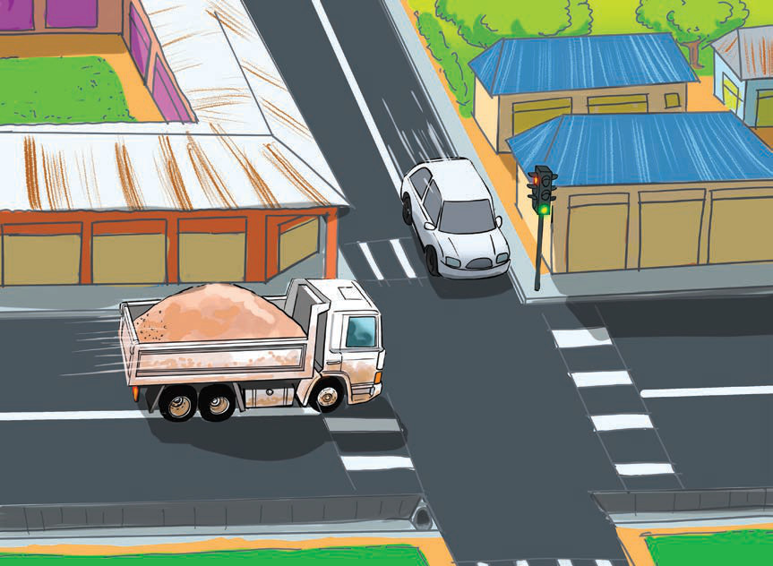

Tulipokaribia Wilaya ya Urambo, dereva wetu alianza kuendesha kwa mwendo wa kasi bila ya kuchukua tahadhari ya kutosha. Ndani ya gari hilo tulikuwemo abiria tusiopungua watano. Wote tulikuwa tumefunga mikanda, tunaenda kwenye mahafali hayo kushuhudia gwaride, maonesho na mambo mengine mengi ya kijeshi.

Lahaula! Tulipofika njiapanda ya Urambo, tulikutana na lori kubwa la mchanga maarufu kama mende. Lori hilo liliingia kwenye barabara kuu kwa kasi bila ya dereva kuruhusiwa na taa za upande wake. Puuu! Kilikuwa ni kishindo kikubwa kama bomu. Watu walipiga mayowe wakisema, “Ajaliii!!” Wengine walisema, “Mungu wangu!” Wengine waliita, “Mamaaa!!” Kelele nyingi zilisikika.